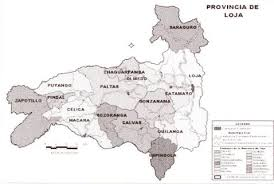

El cantón de Macará se encuentra ubicado al extremo sur occidental de la república del Ecuador, a 79º57'49.39” de longitud oeste y 4º23'13.11” de latitud Sur, tiene 575 kilómetros cuadrados, constituyendo el 5.2% de la superficie de la provincia de Loja
|  |
| Macara |